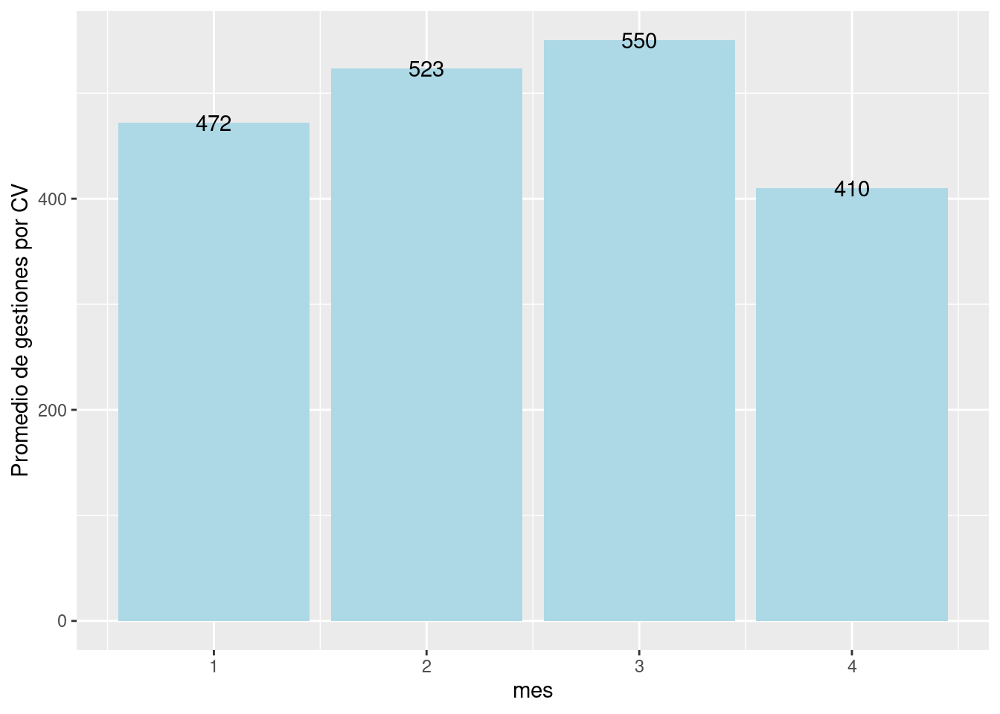
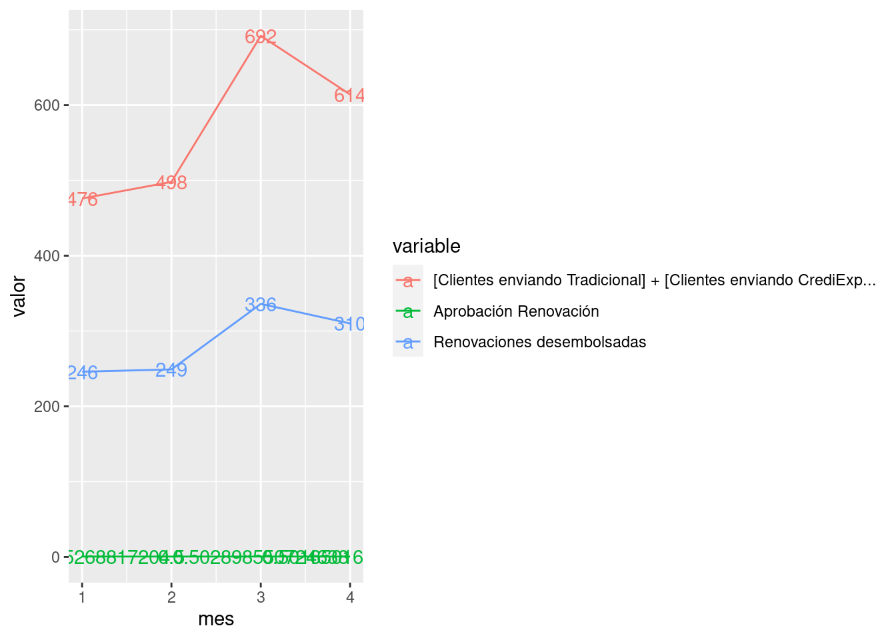
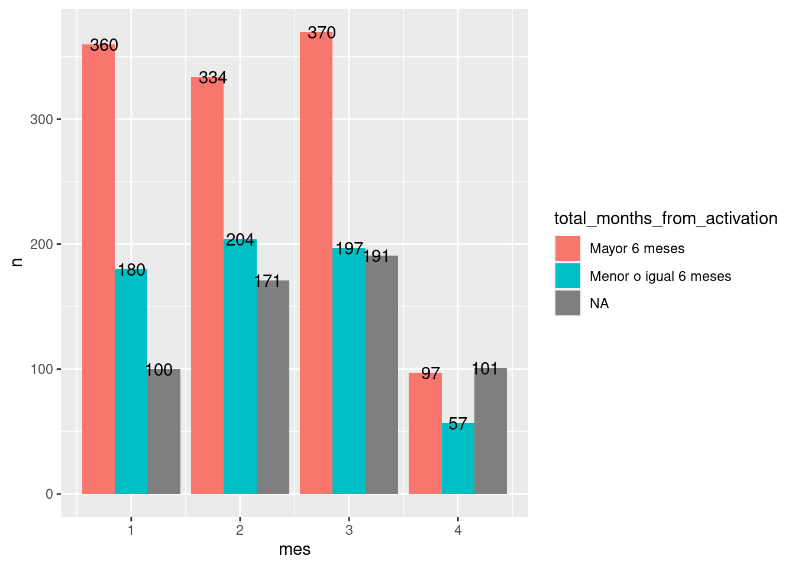

Se observa un quiebre (impacto negativo) en la tendencia de las distintas variables medidas tanto en conjunto (> 6 meses, =< 6 meses) como por separado para el mes de abril, esto posiblemente debido a una disminución en las gestiones realizadas en el último mes.
Se observa una disminución en el número de gestiones efectivas (actividad) por Coordinador Virtual respecto al mes pasado.

Existe una disminución o impacto negativo para el último mes en los créditos aprobados, desembolsos y solicitudes.

Existe una correlación positiva entre el numero de gestiones y el número de solicitudes para edad (mayor a 6 meses)
## [1] 0.4466654–
–
–
–
–
–
–
–
–
Realizar más pruebas para evaluar la veracidad o falsedad de los cálculos siguientes
Dividiendo entre mayor y menor o igual a 6 meses

## # A tibble: 4 × 2
## cluster_segment n
## <chr> <int>
## 1 5 Estrellas 507
## 2 4 Estrellas 450
## 3 3 Estrellas 155
## 4 2 Estrellas 49## # A tibble: 4 × 2
## cluster_segment n
## <chr> <int>
## 1 3 Estrellas 330
## 2 0 Estrellas 165
## 3 4 Estrellas 132
## 4 5 Estrellas 11## # A tibble: 2 × 2
## cluster_segment n
## <chr> <int>
## 1 <NA> 321
## 2 1 Estrella 242Los NA en total months from activation con status de credito aprobado(extraido de borrower profile) tienen una estrella o NA en cluster segment (categorización por estrellas)
## # A tibble: 3 × 2
## total_months_from_activation n
## <chr> <int>
## 1 Mayor 6 meses 46858
## 2 Menor o igual 6 meses 21516
## 3 <NA> 45188